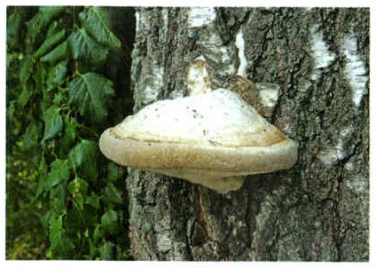
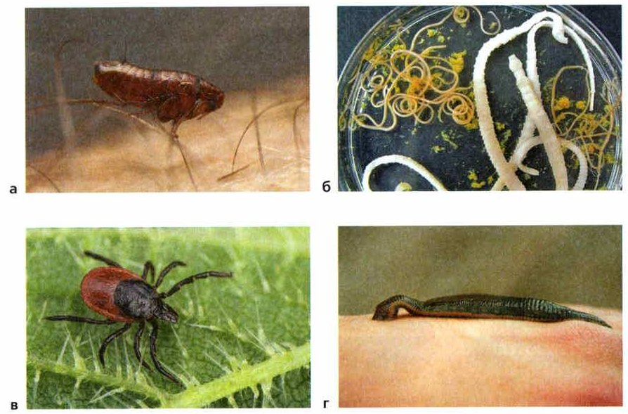
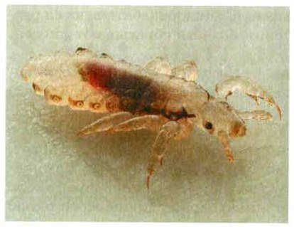

Взаимовыгодные отношения
Многие организмы всю жизнь или её часть живут в других организмах. Некоторые стали жизненно необходимы друг другу — между ними возникли взаимовыгодные отношения: польза обоим. Например, в цитоплазме некоторых одноклеточных животных живут водоросли. Они снабжают клетку животного питательными веществами и кислородом.
Термиты грызут и едят древесину, но сами переварить её не могут. В их кишечнике живут одноклеточные животные — жгутиконосцы: у них есть вещества, которые переваривают древесину. Поэтому термиты и жгутиконосцы не могут выжить друг без друга.
В желудках коров, оленей, антилоп живут миллионы бактерий и одноклеточных животных — инфузорий. Они помогают переваривать растительную пищу.
Взаимовыгодные отношения между организмами. В природе широко распространено явление, при котором многие живые организмы всю свою жизнь или её часть обитают в других организмах. Некоторые организмы стали жизненно необходимы друг другу. Между ними возникли взаимовыгодные отношения. Например, в цитоплазме некоторых одноклеточных животных обитают водоросли. Они снабжают клетку животного питательными веществами и кислородом.
Термиты способны грызть и поедать древесину, но не могут самостоятельно усваивать её. В кишечнике термитов обитают одноклеточные животные — жгутиконосцы. Они обладают веществами, переваривающими древесину. Поэтому термиты и жгутиконосцы не могут выжить друг без друга.
В желудках коров, оленей, антилоп обитают миллионы бактерий и одноклеточных животных — инфузорий, которые способствуют перевариванию растительной пищи.
1. Что такое взаимовыгодные отношения? Приведи пример.
2. Почему термиты и жгутиконосцы не могут выжить друг без друга?
Паразиты и хозяева
Бывает и по-другому. Если один организм использует другого как еду и как дом, это паразитизм (от греч. паразитос — нахлебник).
Паразит питается за счёт другого организма и живёт на его теле или внутри — постоянно или время от времени. Хозяин — организм, который даёт паразиту пищу и место для жизни. Чем сложнее устроен хозяин, тем больше разных паразитов может в нём жить.
Наросты на стволе берёзы — знак, что в ней поселились паразитические грибы и разрушают дерево изнутри (рис. 91). В природе любой организм заражён какими-нибудь паразитами. Больше всего паразитов среди бактерий, одноклеточных животных, микроскопических грибов, червей и клещей. Многие совсем крошечные — 1—5 микрометров, это тысячные доли миллиметра. А есть огромные: бычий цепень, червь из кишечника коров, бывает длиной 10 метров!
Паразитизм. Отношения между двумя организмами разных видов, при которых один организм использует другой в качестве источника пищи и среды обитания, называются паразитизмом (от греч. паразитос — нахлебник).
Паразитом называют организм, который питается за счёт другого организма, временно или постоянно пребывает на поверхности тела или внутри организма. Хозяином называют организм, обеспечивающий паразита питанием и постоянным или временным местом обитания. Чем сложнее устроен организм хозяина, тем более разнообразные условия для жизни других видов он может предоставить.
Наросты на стволе берёзы — это признак того, что в её стволе поселились паразитические грибы, разрушающие организм изнутри (рис. 91). В естественных условиях любой организм заражён теми или иными паразитами. Наибольшее число паразитов встречается среди бактерий, одноклеточных животных, микроскопических грибов, червей и клещей. Размеры многих мелких внутриклеточных паразитов составляют 1—5 мкм. Среди паразитов есть такие, которые имеют огромные размеры. Например, тело бычьего цепня достигает длины 10 м. Этот паразитический червь обитает в кишечнике коров.

▲ Такие «копыта» ты видела в лесу. Гриб живёт за счёт дерева и разрушает его изнутри.
3. Что такое паразитизм?
4. Кого называют хозяином?
Как живут паразиты
Паразит зависит от хозяина и сам на него влияет. А хозяин защищается: например, растения сбрасывают листья, в которых поселились паразиты.
Паразитам приходится эту защиту преодолевать. Жуки-короеды заселяют ствол хвойного дерева, только когда дерево уже не может защититься от них смолой.
Самое трудное в жизни паразита — перебраться к новому хозяину. В это время большинство паразитов гибнет. Поэтому паразиты очень плодовиты. Бычий цепень (рис. 92, б) даёт около 600 миллионов яиц в год. Живёт он 18—20 лет и за жизнь может произвести около 11 миллиардов яиц.
Паразиты и среда обитания. Каждый организм зависит от условий среды обитания и сам воздействует на неё. Поэтому паразит зависит от организма-хозяина и влияет на него. При этом у организма-хозяина вырабатываются различные защитные реакции. Например, растения-хозяева сбрасывают листья, заражённые паразитами.
Паразиты должны преодолевать защитные реакции организма хозяина. Например, жуки-короеды заселяют ствол хвойного дерева лишь тогда, когда дерево не в состоянии защищаться от них выделением смолы.
Основные трудности в жизни паразитов связаны с переносом от одного хозяина другому. В период смены хозяев основная масса паразитов погибает. Поэтому паразиты обладают огромной плодовитостью, которая компенсирует эту гибель. Например, бычий цепень (рис. 92, б) в год образует около 600 млн яиц. Он живёт 18—20 лет и за всю жизнь может произвести около 11 млрд яиц.
5. Как хозяева защищаются от паразитов? Приведи пример.
6. Почему паразиты так плодовиты?
Наружные и внутренние паразиты
Наружные паразиты живут на поверхности тела хозяина: клещи, пиявки, блохи (рис. 92). На коже многих зверей и человека живут мелкие бескрылые насекомые — вши. У них сильные цепкие ноги, а на концах ног — подвижные коготки, которые обхватывают волосок.
Вши — паразиты-«специалисты»: каждый вид живёт на одном или нескольких похожих видах животных. На оленях — оленьи вши, на слонах — слоновая вошь, на зайцах — заячья.
У человека бывают головная вошь (рис. 93) и платяная вошь. Головная вошь сосёт кровь и живёт в волосах на голове. Люди страдают от вшей очень давно: засохших вшей нашли даже у египетских мумий.
Вши передаются только от человека к человеку — от кошек и собак ими не заразишься. Прыгать и летать вши не умеют, зато быстро бегают. Заражаются, когда близко общаются с человеком, у которого есть вши, или берут его вещи: шапку, подушку, расчёску, полотенце, игрушки. Поэтому важно соблюдать гигиену и пользоваться своей расчёской и своими вещами.
Внутренние паразиты живут внутри тела хозяина. Это большинство паразитических червей, бактерий, вирусов и одноклеточных животных.
Наружные и внутренние паразиты. На поверхности тела хозяина обитают наружные паразиты. К этой группе относятся клещи, пиявки, блохи (рис. 92). Накожными паразитами многих зверей и человека являются мелкие бескрылые насекомые — вши. У них очень сильные и цепкие ноги, приспособленные к удерживанию на волосяном покрове животного-хозяина. На концах ног расположены подвижные коготки, которые загибаются к голени, охватывая волосы.
Вши являются специализированными паразитами, приспособленными к обитанию на одном или нескольких близких видах животных. На оленях паразитируют оленьи вши, на слонах паразитирует крупная слоновая вошь, на зайцах паразитирует заячья вошь.
К паразитам человека относятся головная вошь (рис. 93) и платяная вошь. Головная вошь — кровососущий паразит, который живёт на волосяной части головы. Люди с давних времён страдают от вшей, засохшие вши были обнаружены даже у египетских и индейских мумий.
Обычно вши передаются только от человека к человеку, ими нельзя заразиться от домашних или бездомных животных. Эти насекомые не умеют прыгать с головы на голову и летать, но зато быстро передвигаются. Заражение, как правило, происходит при контакте с человеком, заражённым вшами, или его вещами (шапкой, подушкой, расчёской, полотенцем, игрушками и т. д.). Поэтому так важно соблюдать правила личной гигиены и пользоваться одноразовыми или личными предметами ухода.
Внутренние паразиты живут внутри тела хозяина. К этой группе относится большинство паразитических червей, бактерий, вирусов, одноклеточных животных.

▲ Кто из них наружный паразит, а кто внутренний?

▲ Найди цепкие лапки — ими вошь держится за волосы.
7. Чем наружные паразиты отличаются от внутренних?
8. Как вши приспособлены удерживаться на хозяине?
9. Как можно заразиться вшами и как этого избежать?
Паразиты паразитов
Даже у паразитов бывают свои паразиты! Гусениц капустной белянки поражает наездник апантелес, а сам он — хозяин примерно для 20 видов паразитов.
В кишечнике лягушек живут одноклеточные животные — опалины. На опалинах поселяются другие одноклеточные — амёбы, а амёб поражают микроскопические грибки.
Паразиты паразитов. Паразиты, использующие хозяина в качестве местообитания и источника пищи, сами могут быть хозяевами для других паразитов. Например, гусениц капустной белянки поражает наездник апантелес. Он является хозяином примерно 20 видов паразитов.
В кишечнике лягушек паразитируют одноклеточные животные — опалины. На них поселяются другие одноклеточные животные — амёбы, которые сами поражаются микроскопическими грибками.
10. Приведи пример паразитов паразитов.
Итоги и «Моя лаборатория»
Взаимовыгодные отношения · Паразитизм · Паразит · Хозяин
- Что такое паразитизм?
- Какие организмы называют хозяевами?
- С чем связаны основные трудности в жизни паразитов?
- Чем наружные паразиты отличаются от внутренних паразитов?
- Какие организмы являются паразитами паразитов?
- Приведите примеры взаимовыгодных отношений между организмами.
Почему подверженность заражению паразитами наиболее высока у позвоночных животных (рыб, земноводных, пресмыкающихся, птиц, млекопитающих) и цветковых растений?
Гельминтология — наука о паразитических червях (гельминтах) и болезнях, которые они вызывают. Начал её немецкий учёный Карл Асмунд Рудольфи: в 1819 году он описал 981 вид известных тогда гельминтов.
В нашей стране гельминтологию развил академик Константин Иванович Скрябин. Он описал больше 200 видов гельминтов и создал научную школу. В 1925 году Скрябин придумал дегельминтизацию: это не только лечение больного, но и уничтожение яиц и личинок паразитических червей вокруг — чтобы никто больше не заразился.
Сейчас у гельминтологии несколько направлений. Медицинская изучает паразитических червей человека. Ветеринарная — паразитов домашних животных. Агрономическая — паразитических червей сельскохозяйственных растений. А ещё учёные изучают паразитов насекомых: с их помощью можно уменьшать число вредителей на полях.
Гельминтология — наука, изучающая паразитических червей и вызываемые ими заболевания. Становление гельминтологии как научного направления связано с трудами немецкого учёного Карла Асмунда Рудольфи. В 1819 году он опубликовал сведения о 981 виде известных в то время гельминтах.
Большая заслуга в развитии отечественной гельминтологии принадлежит академику Константину Ивановичу Скрябину. Он описал более 200 видов гельминтов. Под его руководством была создана научная школа гельминтологов, разработавшая новые методы гельминтологических исследований. В 1925 году Скрябин сформулировал понятие дегельминтизации. Оно включает не только лечение больного, но и систему профилактических мероприятий по уничтожению яиц и личинок гельминтов во внешней среде.
В современной гельминтологии исследования ведутся по нескольким направлениям. Медицинская гельминтология изучает паразитических червей и вызываемые ими заболевания человека.
Ветеринарная гельминтология исследует гельминтов и гельминтозы домашних животных. Специальный раздел агрономической гельминтологии изучает паразитических червей сельскохозяйственных растений. В последние годы развивается направление, связанное с изучением паразитов насекомых, с помощью которых возможно регулировать численность вредителей сельскохозяйственных растений.
Около 10 000 видов одноклеточных животных — паразиты растений, животных и человека. Они поражают домашних птиц, коров, свиней, рыб, пчёл и вызывают болезни. Чтобы не заболеть:
• тщательно мыть руки после прогулки и туалета и перед едой;
• каждый год проходить обследование у врача;
• хорошо мыть продукты;
• правильно готовить еду;
• избавляться от мух и тараканов в доме, защищаться от укусов комаров, клопов, мух;
• не купаться в грязных водоёмах.
Паразитами растений, различных животных и человека являются около 10 000 современных видов одноклеточных животных (простейших). Паразитические простейшие поражают домашних птиц, коров, свиней, рыб, медоносных пчёл и являются возбудителями протозойных болезней. Во многих странах, где паразитические простейшие вызывают повышенную заболеваемость людей и животных, созданы научные центры для разработки мер борьбы с протозойными болезнями. Основные мероприятия по профилактике протозойных болезней включают:
• соблюдение правил личной гигиены: тщательно мыть руки после прогулки и туалета, перед едой;
• ежегодное прохождение обследований на протозойные заболевания;
• тщательное мытьё продуктов питания;
• соблюдение правил приготовления пищи;
• уничтожение комнатных мух и тараканов, защита от укусов комаров, москитов, клопов, мух;
• запрет купания в загрязнённых водоёмах.
Проверь себя
Ошиблась — не страшно, попробуй другую кнопку.
Клещ
Живёт на поверхности тела хозяина.
Бычий цепень
Живёт в кишечнике коров.
Блоха
Рис. 92, а.
Вирус гриппа
Вирусы — внутриклеточные паразиты (§14).
Пиявка
Рис. 92, г.
Головная вошь
Живёт в волосах на голове.
Опалины в кишечнике лягушки
Живут внутри тела.
Термиты и жгутиконосцы
Не могут выжить друг без друга.
Трутовик на берёзе
Разрушает дерево изнутри.
Корова и бактерии в её желудке
Бактерии помогают переваривать траву.
Клещ на собаке
Пьёт кровь хозяина.
Водоросли в одноклеточном животном
Дают клетке питательные вещества и кислород.
Короеды в ослабевшей ели
Живут за счёт дерева.
1. Что значит греческое слово «паразитос»?
2. Почему термиты не могут жить без жгутиконосцев?
3. Какой длины бывает бычий цепень?
4. Можно ли заразиться вшами от кошки?
5. Когда погибает больше всего паразитов?
6. К тебе прицепился клещ. Что делать?
Расскажи вслух
Взаимовыгодные отношения
- Многие организмы живут в других организмах; некоторые стали необходимы друг другу.
- Водоросли в одноклеточных животных; термиты и жгутиконосцы.
- Бактерии и инфузории в желудках коров, оленей, антилоп помогают переваривать растительную пищу.
Паразиты и хозяева
- Паразитизм — один организм использует другой как пищу и среду обитания; паразитос — нахлебник.
- Хозяин защищается (сбрасывает листья, выделяет смолу), паразит преодолевает защиту.
- Главная трудность — смена хозяина, поэтому паразиты очень плодовиты: бычий цепень.
Наружные и внутренние паразиты
- Наружные: клещи, пиявки, блохи, вши; вши передаются только от человека к человеку.
- Внутренние: паразитические черви, бактерии, вирусы, одноклеточные.
- Защита: личная гигиена, свои вещи, мыть руки; после леса осматриваться на клещей.